7 201: RNA-seq data analysis with DESeq2
Authors: Michael I. Love12, Simon Anders13, Wolfgang Huber14 Last modified: 25 June, 2018.
7.1 Overview
7.1.1 Description
In this workshop, we will give a quick overview of the most useful functions in the DESeq2 package, and a basic RNA-seq analysis. We will cover: how to quantify transcript expression from FASTQ files using Salmon, import quantification from Salmon with tximport and tximeta, generate plots for quality control and exploratory data analysis EDA (also using MultiQC), perform differential expression (DE) (also using apeglm), overlap with other experimental data (using AnnotationHub), and build reports (using ReportingTools and Glimma). We will give a short example of integration of DESeq2 with the zinbwave package for single-cell RNA-seq differential expression. The workshop is designed to be a lab with plenty of time for questions throughout the lab.
7.1.2 Pre-requisites
- Basic knowledge of R syntax
Non-essential background reading:
- DESeq2 paper: https://www.ncbi.nlm.nih.gov/pmc/articles/PMC4302049/
- tximport paper: https://f1000research.com/articles/4-1521/v2
- apeglm paper: https://www.biorxiv.org/content/early/2018/04/17/303255
7.1.3 Participation
Students will participate by following along an Rmarkdown document, and asking questions throughout the workshop.
7.1.4 R / Bioconductor packages used
- DESeq2
- tximport
- apeglm
- AnnotationHub
- ReportingTools
- Glimma
- splatter
- zinbwave
7.1.5 Time outline
| Activity | Time |
|---|---|
| Overview of packages | 20m |
| Quantification and import | 20m |
| EDA and DE | 20m |
| Downstream analysis & reports | 20m |
| ZINB-WaVE integration | 20m |
| Additional questions | 20m |
7.1.6 Workshop goals and objectives
Learning goals
- Visually assess quality of RNA-seq data
- Perform basic differential analysis of RNA-seq data
- Compare RNA-seq results with other experimental data
Learning objectives
- Quantify transcript expression from FASTQ files
- Import quantification into R/Bioconductor
- Perform quality control and exploratory data analysis
- Perform differential expression
- Overlap with other experimental data
- Build dynamic reports
- Integrate DESeq2 and zinbwave for single-cell RNA-seq data
7.2 Preparing data for DESeq2
7.2.1 Experimental data
The data used in this workflow is stored in the airway package that summarizes an RNA-seq experiment wherein airway smooth muscle cells were treated with dexamethasone, a synthetic glucocorticoid steroid with anti-inflammatory effects (Himes et al. 2014). Glucocorticoids are used, for example, by people with asthma to reduce inflammation of the airways. In the experiment, four primary human airway smooth muscle cell lines were treated with 1 micromolar dexamethasone for 18 hours. For each of the four cell lines, we have a treated and an untreated sample. For more description of the experiment see the PubMed entry 24926665 and for raw data see the GEO entry GSE52778.
We will show how to import RNA-seq quantification data using an alternative dataset (the tximportData package which is used in the tximport vignette). Afterward we will load counts for the airway dataset, which were counted using summarizeOverlaps from the GenomicAlignments package. As described below, we recommend the tximport pipeline for producing count matrices, but we do not yet have a Bioconductor package containing the necessary quantification files for the airway dataset.
7.2.2 Modeling count data
As input, the count-based statistical methods, such as DESeq2 (Love, Huber, and Anders 2014), edgeR (Robinson, McCarthy, and Smyth 2009), limma with the voom method (Law et al. 2014), DSS (Wu, Wang, and Wu 2013), EBSeq (Leng et al. 2013) and baySeq (Hardcastle and Kelly 2010), expect input data as obtained, e.g., from RNA-seq or another high-throughput sequencing experiment, in the form of a matrix of counts. The value in the i-th row and the j-th column of the matrix tells how many reads (or fragments, for paired-end RNA-seq) have been assigned to gene i in sample j. Analogously, for other types of assays, the rows of the matrix might correspond e.g., to binding regions (with ChIP-Seq), species of bacteria (with metagenomic datasets), or peptide sequences (with quantitative mass spectrometry).
The values in the matrix should be counts of sequencing reads/fragments. This is important for the statistical models used by DESeq2 and edgeR to hold, as only counts allow assessing the measurement precision correctly. It is important to not provide counts that were pre-normalized for sequencing depth (also called library size), as the statistical model is most powerful when applied to un-normalized counts and is designed to account for library size differences internally.
7.2.3 Transcript abundances
In this workflow, we will show how to use transcript abundances as quantified by the Salmon (Patro et al. 2017) software package. Salmon and other methods, such as Sailfish (Patro, Mount, and Kingsford 2014), kallisto (Bray et al. 2016), or RSEM (Bo Li and Dewey 2011), estimate the relative abundances of all (known, annotated) transcripts without aligning reads. Because estimating the abundance of the transcripts involves an inference step, the counts are estimated. Most methods either use a statistical framework called Estimation-Maximization or Bayesian techniques to estimate the abundances and counts. Following quantification, we will use the tximport (Soneson, Love, and Robinson 2015) package for assembling estimated count and offset matrices for use with Bioconductor differential gene expression packages.
The advantages of using the transcript abundance quantifiers in conjunction with tximport to produce gene-level count matrices and normalizing offsets, are:
- this approach corrects for any potential changes in gene length across samples (e.g. from differential isoform usage) (Trapnell et al. 2013)
- some of these methods are substantially faster and require less memory and less disk usage compared to alignment-based methods
- it is possible to avoid discarding those fragments that can align to multiple genes with homologous sequence (Robert and Watson 2015).
Note that transcript abundance quantifiers skip the generation of large files which store read alignments (SAM or BAM files), instead producing smaller files which store estimated abundances, counts and effective lengths per transcript. For more details, see the manuscript describing this approach (Soneson, Love, and Robinson 2015) and the tximport package vignette for software details.
A full tutorial on how to use the Salmon software for quantifying transcript abundance can be found here.
7.2.4 Salmon quantification
We begin by providing Salmon with the sequence of all of the reference transcripts, which we will call the reference transcriptome. We recommend to use the GENCODE human transcripts, which can be downloaded from the GENCODE website. On the command line, creating the transcriptome index looks like:
salmon index -i gencode.v99_salmon_0.10.0 -t gencode.v99.transcripts.fa.gzThe 0.10.0 refers to the version of Salmon that was used, and is useful to put into the index name.
To quantify an individual sample, sample_01, the following command can be used:
salmon quant -i gencode.v99_salmon_0.10.0 -p 6 --libType A \
--gcBias --biasSpeedSamp 5 \
-1 sample_01_1.fastq.gz -2 sample_01_2.fastq.gz \
-o sample_01In simple English, this command says to “quantify a sample using this transcriptome index, with 6 threads, using automatic library type detection, using GC bias correction (the bias speed part is now longer needed with current versions of Salmon), here are the first and second read, and use this output directory.” The output directory will be created if it doesn’t exist, though if earlier parts of the path do not exist, it will give an error. A single sample of human RNA-seq usually takes ~5 minutes with the GC bias correction.
Rather than writing the above command on the command line multiple times for each sample, it is possible to loop over files using a bash loop, or more advanced workflow management systems such as Snakemake (Köster and Rahmann 2012) or Nextflow (Di Tommaso et al. 2017).
7.3 Importing into R with tximport
7.3.1 Specifying file locations
Following quantification, we can use tximport to import the data into R and perform statistical analysis using Bioconductor packages. Normally, we would simply point tximport to the quant.sf files on our machine. However, because we are distributing these files as part of an R package, we have to do some extra steps, to figure out where the R package, and so the files, are located on your machine.
We will show how to import Salmon quantification files using the data in the tximportData package. The quantified samples are six samples from the GEUVADIS Project (Lappalainen et al. 2013). The output directories from the above Salmon quantification calls has been stored in the extdata directory of the tximportData package. The R function system.file can be used to find out where on your computer the files from a package have been installed. Here we ask for the full path to the extdata directory, where R packages store external data, that is part of the tximportData package.
library("tximportData")
dir <- system.file("extdata", package="tximportData")
list.files(dir)
#> [1] "cufflinks" "kallisto"
#> [3] "kallisto_boot" "rsem"
#> [5] "sailfish" "salmon"
#> [7] "salmon_dm" "salmon_gibbs"
#> [9] "samples_extended.txt" "samples.txt"
#> [11] "tx2gene.csv" "tx2gene.gencode.v27.csv"The Salmon quantification directories are in the salmon directory.
list.files(file.path(dir,"salmon"))
#> [1] "ERR188021" "ERR188088" "ERR188288" "ERR188297" "ERR188329" "ERR188356"The identifiers used here are the ERR identifiers from the European Nucleotide Archive. We need to create a named vector pointing to the quantification files. We will create a vector of filenames first by reading in a table that contains the sample IDs, and then combining this with dir and "quant.sf.gz". (We gzipped the quantification files to make the data package smaller, this is not a problem for R functions that we use to import the files.)
samples <- read.table(file.path(dir,"samples.txt"), header=TRUE)
samples
#> pop center assay sample experiment run
#> 1 TSI UNIGE NA20503.1.M_111124_5 ERS185497 ERX163094 ERR188297
#> 2 TSI UNIGE NA20504.1.M_111124_7 ERS185242 ERX162972 ERR188088
#> 3 TSI UNIGE NA20505.1.M_111124_6 ERS185048 ERX163009 ERR188329
#> 4 TSI UNIGE NA20507.1.M_111124_7 ERS185412 ERX163158 ERR188288
#> 5 TSI UNIGE NA20508.1.M_111124_2 ERS185362 ERX163159 ERR188021
#> 6 TSI UNIGE NA20514.1.M_111124_4 ERS185217 ERX163062 ERR188356
files <- file.path(dir, "salmon", samples$run, "quant.sf.gz")
names(files) <- paste0("sample",1:6)
all(file.exists(files))
#> [1] TRUE7.3.2 Mapping transcripts to genes
Transcripts need to be associated with gene IDs for gene-level summarization. We therefore will construct a data.frame called tx2gene with two columns: 1) transcript ID and 2) gene ID. The column names do not matter but this column order must be used. The transcript ID must be the same one used in the abundance files. This can most easily be accomplished by downloading the GTF file at the same time that the transcriptome FASTA is downloaded, and generating tx2gene from the GTF file using Bioconductor’s TxDb infrastructure.
Generating a TxDb from a GTF file can be easily accomplished with the makeTxDbFromGFF function. This step requires a few minutes of waiting, and a large file. We therefore skip this step, but show the code that is used to create the tx2gene table, assuming the correct TxDb object has been created.
Creating the tx2gene data.frame can be accomplished by calling the select function from the AnnotationDbi package on a TxDb object. The following code could be used to construct such a table:
library("TxDb.Hsapiens.UCSC.hg38.knownGene")
txdb <- TxDb.Hsapiens.UCSC.hg38.knownGene
k <- keys(txdb, keytype="TXNAME")
tx2gene <- select(txdb, k, "GENEID", "TXNAME")
#> 'select()' returned 1:1 mapping between keys and columnsIn this case, we’ve used the Gencode v27 CHR transcripts to build our Salmon index, and we used makeTxDbFromGFF and code similar to the chunk above to build the tx2gene table. We then read in a pre-constructed tx2gene table:
library("readr")
tx2gene <- read_csv(file.path(dir, "tx2gene.gencode.v27.csv"))
#> Parsed with column specification:
#> cols(
#> TXNAME = col_character(),
#> GENEID = col_character()
#> )
head(tx2gene)
#> # A tibble: 6 x 2
#> TXNAME GENEID
#> <chr> <chr>
#> 1 ENST00000456328.2 ENSG00000223972.5
#> 2 ENST00000450305.2 ENSG00000223972.5
#> 3 ENST00000473358.1 ENSG00000243485.5
#> 4 ENST00000469289.1 ENSG00000243485.5
#> 5 ENST00000607096.1 ENSG00000284332.1
#> 6 ENST00000606857.1 ENSG00000268020.37.3.3 tximport command
Finally the following line of code imports Salmon transcript quantifications into R, collapsing to the gene level using the information in tx2gene.
library("tximport")
library("jsonlite")
library("readr")
txi <- tximport(files, type="salmon", tx2gene=tx2gene)
#> reading in files with read_tsv
#> 1 2 3 4 5 6
#> summarizing abundance
#> summarizing counts
#> summarizing lengthThe txi object is simply a list of matrices (and one character vector):
names(txi)
#> [1] "abundance" "counts" "length"
#> [4] "countsFromAbundance"
txi$counts[1:3,1:3]
#> sample1 sample2 sample3
#> ENSG00000000003.14 2.58012 2.000 27.09648
#> ENSG00000000005.5 0.00000 0.000 0.00000
#> ENSG00000000419.12 1056.99960 1337.997 1452.99497
txi$length[1:3,1:3]
#> sample1 sample2 sample3
#> ENSG00000000003.14 3621.7000 735.4220 2201.6223
#> ENSG00000000005.5 195.6667 195.6667 195.6667
#> ENSG00000000419.12 871.5077 905.0540 845.7278
txi$abundance[1:3,1:3]
#> sample1 sample2 sample3
#> ENSG00000000003.14 0.0354884 0.119404 0.411491
#> ENSG00000000005.5 0.0000000 0.000000 0.000000
#> ENSG00000000419.12 60.4173800 64.909276 57.441353
txi$countsFromAbundance
#> [1] "no"If we were continuing with the GEUVADIS samples, we would then create a DESeqDataSet with the following line of code. Because there are no differences among the samples (same population and same sequencing batch), we specify a design formula of ~1, meaning we can only fit an intercept term – so we cannot perform differential expression analysis with these samples.
library("DESeq2")
dds <- DESeqDataSetFromTximport(txi, samples, ~1)
#> using counts and average transcript lengths from tximport
dds$center
#> [1] UNIGE UNIGE UNIGE UNIGE UNIGE UNIGE
#> Levels: UNIGE
dds$pop
#> [1] TSI TSI TSI TSI TSI TSI
#> Levels: TSI7.4 Exploratory data analysis
7.4.1 Simple EDA
We will now switch over to the airway experiment, counts of which are already prepared in a SummarizedExperiment object. In this case, the object that we load is the output of the summarizeOverlaps function in the GenomicAlignments package, and the exact code used to produce this object can be seen by typing vignette("airway") into the R session, to pull up the airway software vignette. There are multiple ways to produce a count table and import it into DESeq2, and these are summarized in this section of the RNA-seq gene-level workflow.
library("airway")
data("airway")We want to specify that untrt is the reference level for the dex variable:
airway$dex <- relevel(airway$dex, "untrt")
airway$dex
#> [1] untrt trt untrt trt untrt trt untrt trt
#> Levels: untrt trtWe can quickly check the millions of fragments that uniquely aligned to the genes (the second argument of round tells how many decimal points to keep).
round( colSums(assay(airway)) / 1e6, 1 )
#> SRR1039508 SRR1039509 SRR1039512 SRR1039513 SRR1039516 SRR1039517
#> 20.6 18.8 25.3 15.2 24.4 30.8
#> SRR1039520 SRR1039521
#> 19.1 21.2We can inspect the information about the samples, by pulling out the colData slot of the SummarizedExperiment:
colData(airway)
#> DataFrame with 8 rows and 9 columns
#> SampleName cell dex albut Run avgLength
#> <factor> <factor> <factor> <factor> <factor> <integer>
#> SRR1039508 GSM1275862 N61311 untrt untrt SRR1039508 126
#> SRR1039509 GSM1275863 N61311 trt untrt SRR1039509 126
#> SRR1039512 GSM1275866 N052611 untrt untrt SRR1039512 126
#> SRR1039513 GSM1275867 N052611 trt untrt SRR1039513 87
#> SRR1039516 GSM1275870 N080611 untrt untrt SRR1039516 120
#> SRR1039517 GSM1275871 N080611 trt untrt SRR1039517 126
#> SRR1039520 GSM1275874 N061011 untrt untrt SRR1039520 101
#> SRR1039521 GSM1275875 N061011 trt untrt SRR1039521 98
#> Experiment Sample BioSample
#> <factor> <factor> <factor>
#> SRR1039508 SRX384345 SRS508568 SAMN02422669
#> SRR1039509 SRX384346 SRS508567 SAMN02422675
#> SRR1039512 SRX384349 SRS508571 SAMN02422678
#> SRR1039513 SRX384350 SRS508572 SAMN02422670
#> SRR1039516 SRX384353 SRS508575 SAMN02422682
#> SRR1039517 SRX384354 SRS508576 SAMN02422673
#> SRR1039520 SRX384357 SRS508579 SAMN02422683
#> SRR1039521 SRX384358 SRS508580 SAMN02422677
table(airway$cell)
#>
#> N052611 N061011 N080611 N61311
#> 2 2 2 2
table(airway$dex)
#>
#> untrt trt
#> 4 4If we had not already loaded DESeq2, we would do this, and then create a DESeqDataSet. We want to control for the cell line, while testing for differences across dexamethasone treatment, so we use a design of ~ cell + dex:
library("DESeq2")
dds <- DESeqDataSet(airway, design = ~ cell + dex)We will perform a minimal filtering to reduce the size of the dataset. We do not need to retain genes if they do not have a count of 5 or more for 4 or more samples as these genes will have no statistical power to detect differences, and no information to compute distances between samples.
keep <- rowSums(counts(dds) >= 5) >= 4
table(keep)
#> keep
#> FALSE TRUE
#> 46070 18032
dds <- dds[keep,]Some very basic exploratory analysis is to examine a boxplot of the counts for each sample. We will take the logarithm so that large counts do not dominate the boxplot:
boxplot(log10(counts(dds)+1))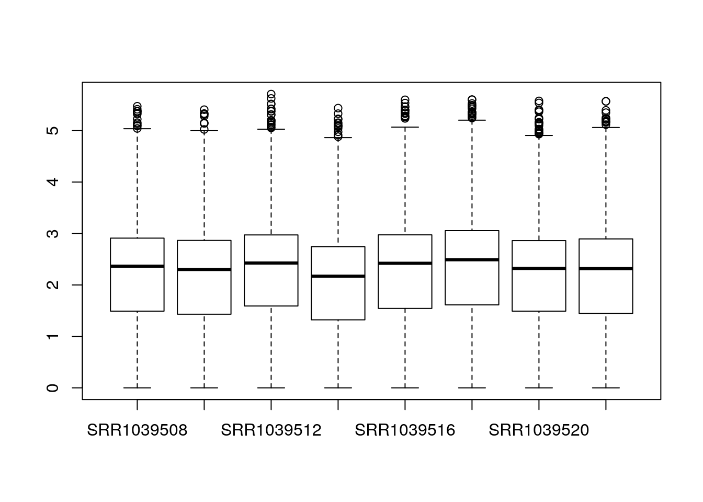
The main function in DESeq2 involves computation of size factors which normalize for differences in sequencing depth among samples. We can also compute these size factors manually, so that the normalized counts are available for plotting:
dds <- estimateSizeFactors(dds)
boxplot(log10(counts(dds,normalized=TRUE)+1))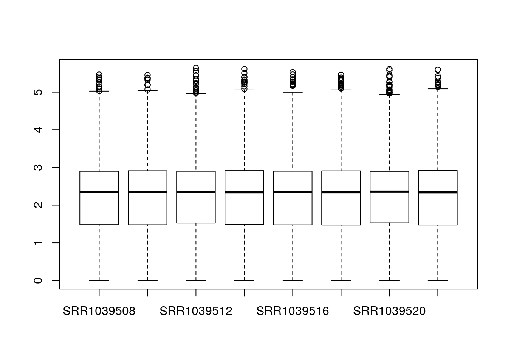
7.4.2 Data transformation for EDA
Taking the logarithm of counts plus a pseudocount of 1 is a common transformation, but it tends to inflate the sampling variance of low counts such that it is even larger than biological variation across groups of samples. In DESeq2 we therefore provide transformations which produce log-scale data such that the systematic trends have been removed. Our recommended transformation is the variance-stabilizing transformation, or VST, and it can be called with the vst function:
vsd <- vst(dds)
class(vsd)
#> [1] "DESeqTransform"
#> attr(,"package")
#> [1] "DESeq2"This function does not return a DESeqDataSet, because it does not return counts, but instead continuous values (on the log2 scale). We can access the transformed data with assay:
assay(vsd)[1:3,1:3]
#> SRR1039508 SRR1039509 SRR1039512
#> ENSG00000000003 9.456925 9.074623 9.608160
#> ENSG00000000419 8.952752 9.262092 9.145782
#> ENSG00000000457 8.193711 8.098664 8.0326567.4.3 Principal components plot
The VST data is appropriate for calculating distances between samples or for performing PCA. More information about PCA and distance calculation can be found in the RNA-seq gene-level workflow. In short, PCA plots allow us to visualize the most dominant axes of variation in our data, which is useful for both quality control, and to get a sense of how large the inter-sample differences are across and within conditions. Here we see that PC1 (the primary axis of variation in the data) separates the treated and untreated samples:
plotPCA(vsd, "dex")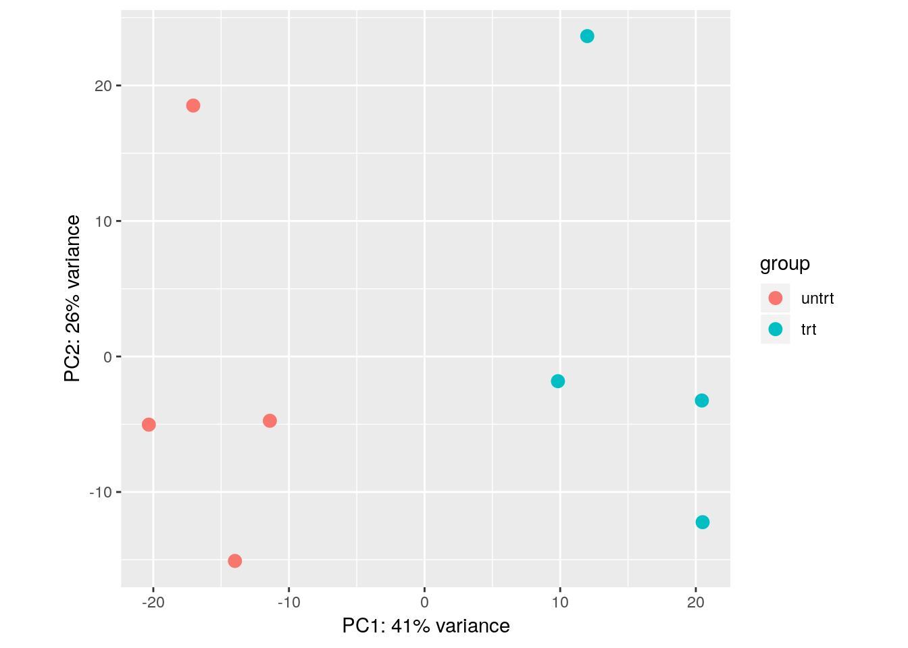
With some additional ggplot2 code, we can also indicate which samples belong to which cell line:
library("ggplot2")
pcaData <- plotPCA(vsd, intgroup = c( "dex", "cell"), returnData = TRUE)
percentVar <- round(100 * attr(pcaData, "percentVar"))
ggplot(pcaData, aes(x = PC1, y = PC2, color = dex, shape = cell)) +
geom_point(size =3) +
xlab(paste0("PC1: ", percentVar[1], "% variance")) +
ylab(paste0("PC2: ", percentVar[2], "% variance")) +
coord_fixed()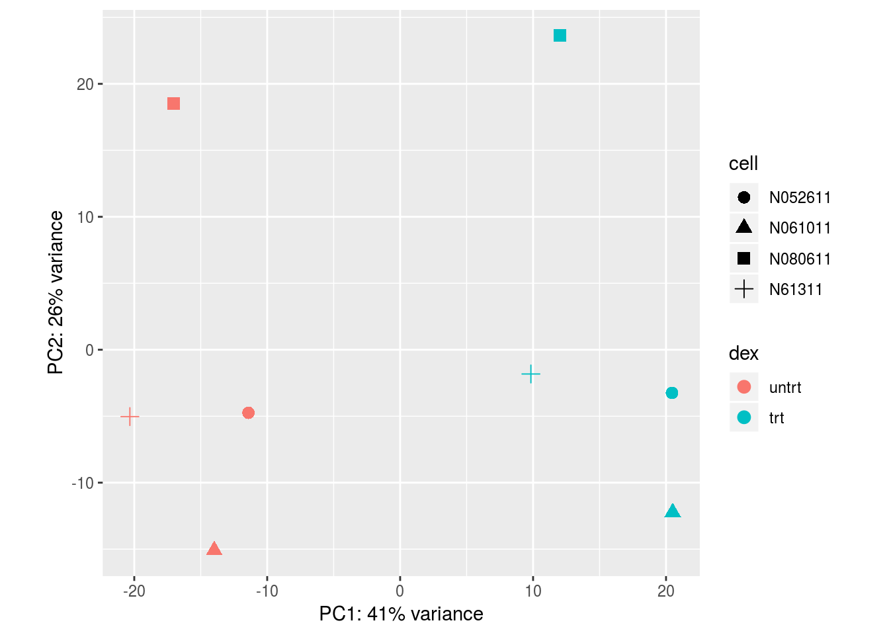
Note that we do not recommend working with the transformed data for the primary differential expression analysis. Instead we will use the original counts and a generalized linear model (GLM) which takes into account the expected variance from either low or high counts. For statistical details, please refer to the DESeq2 methods paper (Love, Huber, and Anders 2014).
7.5 Differential expression analysis
7.5.1 Standard DE steps
Differential expression analysis in DESeq2 is performed by calling the following two functions:
dds <- DESeq(dds)
#> using pre-existing size factors
#> estimating dispersions
#> gene-wise dispersion estimates
#> mean-dispersion relationship
#> final dispersion estimates
#> fitting model and testing
res <- results(dds)The results table res contains the results for each gene (in the same order as in the DESeqDataSet). If we want to see the top genes, we can order it like so:
head(res[order(res$pvalue),])
#> log2 fold change (MLE): dex trt vs untrt
#> Wald test p-value: dex trt vs untrt
#> DataFrame with 6 rows and 6 columns
#> baseMean log2FoldChange lfcSE
#> <numeric> <numeric> <numeric>
#> ENSG00000152583 997.522193389904 4.57431721934304 0.183934560913345
#> ENSG00000165995 495.289924523775 3.29060376160918 0.132397954562143
#> ENSG00000120129 3409.85238036378 2.9472509434796 0.122471899795457
#> ENSG00000101347 12707.320121355 3.7664043884956 0.156934450302937
#> ENSG00000189221 2342.17328482568 3.35311264853201 0.142537730294312
#> ENSG00000211445 12292.1234547129 3.72983474166149 0.167361554596787
#> stat pvalue
#> <numeric> <numeric>
#> ENSG00000152583 24.8692643548272 1.60060784368496e-136
#> ENSG00000165995 24.8538866970538 2.34741049897627e-136
#> ENSG00000120129 24.0647115656888 5.85597945778505e-128
#> ENSG00000101347 23.9998571456117 2.79035105617505e-127
#> ENSG00000189221 23.5243864316382 2.29647414481068e-122
#> ENSG00000211445 22.2860904384375 5.04142736936512e-110
#> padj
#> <numeric>
#> ENSG00000152583 2.03426593841284e-132
#> ENSG00000165995 2.03426593841284e-132
#> ENSG00000120129 3.38319453207768e-124
#> ENSG00000101347 1.20905911264065e-123
#> ENSG00000189221 7.96049797557172e-119
#> ENSG00000211445 1.4563003194306e-106We can plot the counts for the top gene using plotCounts:
plotCounts(dds, which.min(res$pvalue), "dex")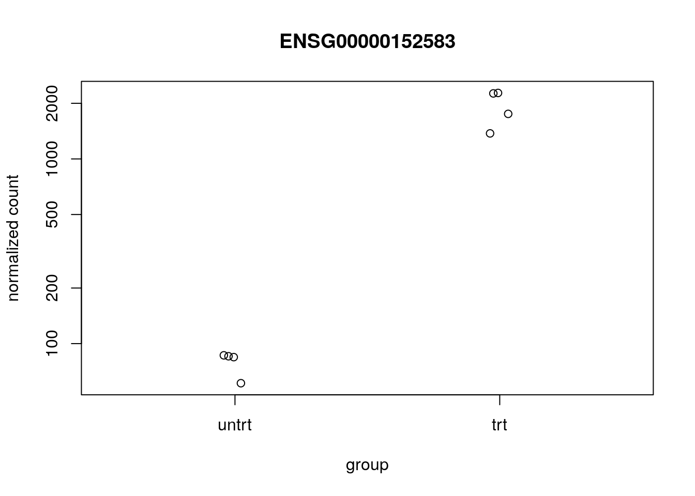
We can examine all the log2 fold changes (LFC) due to dexamethasone treatment over the mean of counts using plotMA:
plotMA(res, ylim=c(-5,5))Note that there are many large LFC which are not significant (grey points) on the left side of the MA-plot above. These obtain a large LFC because of the imprecision of log counts. For more informative visualization and more accurate ranking of genes by effect size (the log fold change may sometimes be referred to as an effect size), we recommend to use DESeq2’s functionality for shrinking LFCs. Our most recent methodological development is the apeglm shrinkage estimator, which is available in DESeq2’s lfcShrink function:
library("apeglm")
resultsNames(dds)
#> [1] "Intercept" "cell_N061011_vs_N052611"
#> [3] "cell_N080611_vs_N052611" "cell_N61311_vs_N052611"
#> [5] "dex_trt_vs_untrt"
res2 <- lfcShrink(dds, coef="dex_trt_vs_untrt", type="apeglm")
#> using 'apeglm' for LFC shrinkage. If used in published research, please cite:
#> Zhu, A., Ibrahim, J.G., Love, M.I. (2018) Heavy-tailed prior distributions for
#> sequence count data: removing the noise and preserving large differences.
#> bioRxiv. https://doi.org/10.1101/303255par(mfrow=c(1,2))
plotMA(res, ylim=c(-3,3), main="No shrinkage")
plotMA(res2, ylim=c(-3,3), main="apeglm")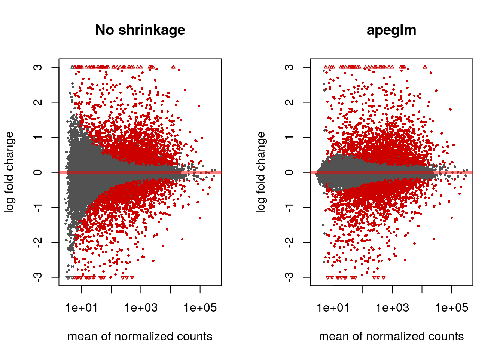
7.5.2 Minimum effect size
If we don’t want to report as significant genes with small LFC, we can specify a minimum biologically meaningful effect size, by choosing an LFC and testing against this. We can either perform such a threshold test using the unshrunken LFCs or the LFCs provided by lfcShrink using the apeglm method:
res.lfc <- results(dds, lfcThreshold=1)
res.lfc2 <- lfcShrink(dds, coef="dex_trt_vs_untrt", type="apeglm",
lfcThreshold=1)
#> using 'apeglm' for LFC shrinkage. If used in published research, please cite:
#> Zhu, A., Ibrahim, J.G., Love, M.I. (2018) Heavy-tailed prior distributions for
#> sequence count data: removing the noise and preserving large differences.
#> bioRxiv. https://doi.org/10.1101/303255
#> computing FSOS 'false sign or small' s-values (T=1)Note that testing against an LFC threshold is not equivalent to testing against a null hypothesis of 0 and then filtering on LFC values. We prefer the former, as discussed in Love, Huber, and Anders (2014) and Zhu, Ibrahim, and Love (2018).
The apeglm method provides s-values (Stephens 2016) when svalue=TRUE or when we supply a minimum effect size as above. These are analogous to q-values or adjusted p-values, in that the genes with s-values less than \(\alpha\) should have an aggregate rate of false sign or being smaller in absolute value than our given LFC threshold, which is bounded by \(\alpha\).
par(mfrow=c(1,2))
plotMA(res.lfc, ylim=c(-5,5), main="No shrinkage, LFC test")
plotMA(res.lfc2, ylim=c(-5,5), main="apeglm, LFC test", alpha=0.01)
7.6 AnnotationHub
7.6.1 Querying AnnotationHub
We will use the AnnotationHub package to attach additional information to the results table. AnnotationHub provides an easy-to-use interface to more than 40,000 annotation records. A record may be peaks from a ChIP-seq experiment from ENCODE, the sequence of the human genome, a TxDb containing information about transcripts and genes, or an OrgDb containing general information about biological identifiers for a particular organism.
library("AnnotationHub")
ah <- AnnotationHub()
#> snapshotDate(): 2018-06-27The following code chunk, un-evaluated here, launches a browser for navigating all the records available through AnnotationHub.
display(ah)We can also query using keywords with the query function:
query(ah, c("OrgDb","Homo sapiens"))
#> AnnotationHub with 1 record
#> # snapshotDate(): 2018-06-27
#> # names(): AH61777
#> # $dataprovider: ftp://ftp.ncbi.nlm.nih.gov/gene/DATA/
#> # $species: Homo sapiens
#> # $rdataclass: OrgDb
#> # $rdatadateadded: 2018-04-19
#> # $title: org.Hs.eg.db.sqlite
#> # $description: NCBI gene ID based annotations about Homo sapiens
#> # $taxonomyid: 9606
#> # $genome: NCBI genomes
#> # $sourcetype: NCBI/ensembl
#> # $sourceurl: ftp://ftp.ncbi.nlm.nih.gov/gene/DATA/, ftp://ftp.ensembl....
#> # $sourcesize: NA
#> # $tags: c("NCBI", "Gene", "Annotation")
#> # retrieve record with 'object[["AH61777"]]'To pull down a particular record we use double brackets and the name of the record:
hs <- ah[["AH61777"]]
#> downloading 0 resources
#> loading from cache
#> '/home/ubuntu//.AnnotationHub/68523'
hs
#> OrgDb object:
#> | DBSCHEMAVERSION: 2.1
#> | Db type: OrgDb
#> | Supporting package: AnnotationDbi
#> | DBSCHEMA: HUMAN_DB
#> | ORGANISM: Homo sapiens
#> | SPECIES: Human
#> | EGSOURCEDATE: 2018-Apr4
#> | EGSOURCENAME: Entrez Gene
#> | EGSOURCEURL: ftp://ftp.ncbi.nlm.nih.gov/gene/DATA
#> | CENTRALID: EG
#> | TAXID: 9606
#> | GOSOURCENAME: Gene Ontology
#> | GOSOURCEURL: ftp://ftp.geneontology.org/pub/go/godatabase/archive/latest-lite/
#> | GOSOURCEDATE: 2018-Mar28
#> | GOEGSOURCEDATE: 2018-Apr4
#> | GOEGSOURCENAME: Entrez Gene
#> | GOEGSOURCEURL: ftp://ftp.ncbi.nlm.nih.gov/gene/DATA
#> | KEGGSOURCENAME: KEGG GENOME
#> | KEGGSOURCEURL: ftp://ftp.genome.jp/pub/kegg/genomes
#> | KEGGSOURCEDATE: 2011-Mar15
#> | GPSOURCENAME: UCSC Genome Bioinformatics (Homo sapiens)
#> | GPSOURCEURL:
#> | GPSOURCEDATE: 2018-Mar26
#> | ENSOURCEDATE: 2017-Dec04
#> | ENSOURCENAME: Ensembl
#> | ENSOURCEURL: ftp://ftp.ensembl.org/pub/current_fasta
#> | UPSOURCENAME: Uniprot
#> | UPSOURCEURL: http://www.UniProt.org/
#> | UPSOURCEDATE: Mon Apr 9 20:58:54 2018
#>
#> Please see: help('select') for usage information7.6.2 Mapping IDs
The rownames of the results table are Ensembl IDs, and most of these are entries in OrgDb (although thousands are not).
columns(hs)
#> [1] "ACCNUM" "ALIAS" "ENSEMBL" "ENSEMBLPROT"
#> [5] "ENSEMBLTRANS" "ENTREZID" "ENZYME" "EVIDENCE"
#> [9] "EVIDENCEALL" "GENENAME" "GO" "GOALL"
#> [13] "IPI" "MAP" "OMIM" "ONTOLOGY"
#> [17] "ONTOLOGYALL" "PATH" "PFAM" "PMID"
#> [21] "PROSITE" "REFSEQ" "SYMBOL" "UCSCKG"
#> [25] "UNIGENE" "UNIPROT"
table(rownames(res) %in% keys(hs, "ENSEMBL"))
#>
#> FALSE TRUE
#> 3492 14540We can use the mapIds function to add gene symbols, using ENSEMBL as the keytype, and requesting the column SYMBOL.
res$symbol <- mapIds(hs, rownames(res), column="SYMBOL", keytype="ENSEMBL")
#> 'select()' returned 1:many mapping between keys and columns
head(res)
#> log2 fold change (MLE): dex trt vs untrt
#> Wald test p-value: dex trt vs untrt
#> DataFrame with 6 rows and 7 columns
#> baseMean log2FoldChange lfcSE
#> <numeric> <numeric> <numeric>
#> ENSG00000000003 708.84032163709 -0.381888900525941 0.100800595893129
#> ENSG00000000419 520.444343803335 0.206203578138316 0.11134065494833
#> ENSG00000000457 237.237392013978 0.0373231179429596 0.140524882318114
#> ENSG00000000460 57.9518862998956 -0.0907678445512801 0.276878121357344
#> ENSG00000000971 5819.01711439455 0.425781621579747 0.089731469359872
#> ENSG00000001036 1282.59042750161 -0.241675199658791 0.0898743244142716
#> stat pvalue
#> <numeric> <numeric>
#> ENSG00000000003 -3.78855796577658 0.000151524241379562
#> ENSG00000000419 1.85200615385287 0.0640249392376881
#> ENSG00000000457 0.26559793061039 0.790548879507716
#> ENSG00000000460 -0.32782599111229 0.743043234271692
#> ENSG00000000971 4.74506463136284 2.08439771237453e-06
#> ENSG00000001036 -2.68903495223842 0.0071658915709543
#> padj symbol
#> <numeric> <character>
#> ENSG00000000003 0.00121584173684748 TSPAN6
#> ENSG00000000419 0.184546856289308 DPM1
#> ENSG00000000457 0.903592643011972 SCYL3
#> ENSG00000000460 0.878207188925546 C1orf112
#> ENSG00000000971 2.54952583986418e-05 CFH
#> ENSG00000001036 0.0334768821314771 FUCA27.7 Building reports
7.7.1 ReportingTools
There are many packages for building interactive reports from Bioconductor. Two of these are ReportingTools and Glimma, which both provide HTML reports that allow for collaborators to examine the top genes (or whatever features of interest) from a genomic analysis.
The code for compiling a ReportingTools report is:
library("ReportingTools")
tmp <- tempdir() # you would instead use a meaningful path here
rep <- HTMLReport(shortName="airway", title="Airway DGE",
basePath=tmp, reportDirectory="report")
publish(res, rep, dds, n=20, make.plots=TRUE, factor=dds$dex)
finish(rep)
#> [1] "/tmp/RtmpBov3oy/report/airway.html"This last line, un-evaluated would launch the report in a web browser:
browseURL(file.path(tmp,"report","airway.html"))7.7.2 Glimma
Another package which can generate interactive reports is Glimma. The glMDPlot constructs an interactive MA-plot where hovering over a gene in the MA-plot on the left side will display the counts for the samples on the right hand side. Clicking will bring up the gene’s information in a tooltip and in a list at the bottom of the screen. Hovering on a sample on the right hand side will give the sample ID in a tooltip.
library("Glimma")
status <- as.numeric(res$padj < .1)
anno <- data.frame(GeneID=rownames(res), symbol=res$symbol)
glMDPlot(res2, status=status, counts=counts(dds,normalized=TRUE),
groups=dds$dex, transform=FALSE,
samples=colnames(dds), anno=anno,
path=tmp, folder="glimma", launch=FALSE)This last line would launch the report in a web browser:
browseURL(file.path(tmp,"glimma","MD-Plot.html"))7.8 Integration with ZINB-WaVE
7.8.1 Simulate with splatter
In this last section, we show that DESeq2 can be integrated with another Bioconductor package zinbwave (Risso et al. 2018a) in order to model and account for additional zeros (more than expected by the Negative Binomial model). This can be useful for single cell RNA-seq experiments.
Here we use the splatter package to simulate single-cell RNA-seq data (Zappia, Phipson, and Oshlack 2017). We then use the methods defined in Van den Berge et al. (2018) to combine zinbwave observation weights with DESeq2 modeling of negative binomial counts.
From Van den Berge et al. (2018):
It is important to note that while methods such as ZINB-WaVE and ZINGER can successfully identify excess zeros, they cannot, however, readily discriminate between their underlying causes, i.e., between technical (e.g., dropout) and biological (e.g., bursting) zeros.
The above note implies that the zero-inflation weighting approach outlined below can be used when the interesting signal is not in the zero component. That is, if you wanted to find biological differences in transcriptional bursting across groups of cells, the below approach would not help you find these differences. It instead helps to uncover differences in counts besides the zero component (whether those zeros be biological or technical).
7.8.2 Simulate single-cell count data with splatter
The following chunks of code create a splatter simulation:
library("splatter")
params <- newSplatParams()
params <- setParam(params, "de.facLoc", 1)
params <- setParam(params, "de.facScale", .25)
params <- setParam(params, "dropout.type", "experiment")
params <- setParam(params, "dropout.mid", 3)set.seed(1)
sim <- splatSimulate(params, group.prob=c(.5,.5), method="groups")
#> Getting parameters...
#> Creating simulation object...
#> Simulating library sizes...
#> Simulating gene means...
#> Simulating group DE...
#> Simulating cell means...
#> Simulating BCV...
#> Simulating counts...
#> Simulating dropout (if needed)...
#> Done!We can plot the amount of dropouts over the true counts:
plot(log10(rowMeans(assays(sim)[["TrueCounts"]])),
rowMeans(assays(sim)[["Dropout"]]))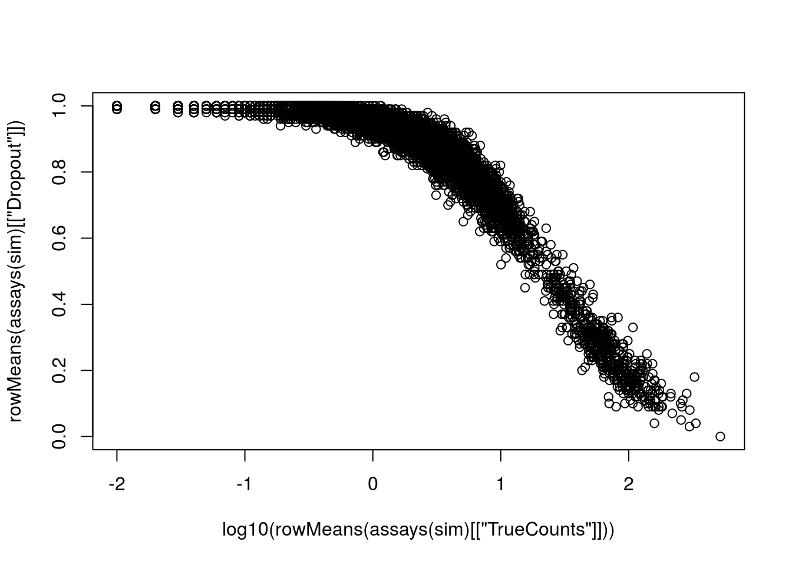
We will store the true log2 fold change for comparison:
rowData(sim)$log2FC <- with(rowData(sim), log2(DEFacGroup2/DEFacGroup1))The true dispersion for the Negative Binomial component, over the mean:
rowData(sim)$trueDisp <- rowMeans(assays(sim)[["BCV"]])^2
gridlines <- c(1e-2,1e-1,1); cols <- c("blue","red","darkgreen")
with(rowData(sim)[rowData(sim)$GeneMean> 1,],
plot(GeneMean, trueDisp, log="xy", xlim=c(1,300), ylim=c(.01,5)))
abline(h=gridlines, col=cols)
text(300, gridlines, labels=gridlines, col=cols, pos=3)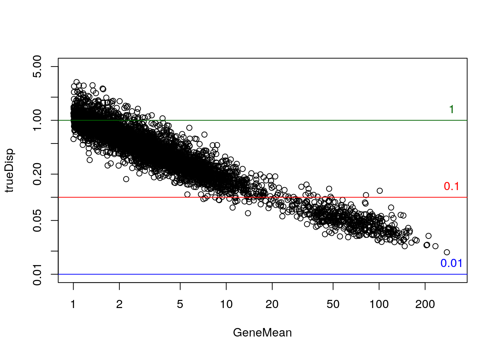
7.8.3 Model zeros with zinbwave
The following code subsets the dataset and creates a condition variable that we will use to test for differential expression:
library(zinbwave)
keep <- rowSums(counts(sim) >= 5) >= 25
table(keep)
#> keep
#> FALSE TRUE
#> 9020 980
zinb <- sim[keep,]
zinb$condition <- factor(zinb$Group)We need to re-arrange the assays in the zinb object such that "counts" is the first assay:
nms <- c("counts", setdiff(assayNames(zinb), "counts"))
assays(zinb) <- assays(zinb)[nms]Finally we fit the ZINB-WaVE model. See ?zinbwave and the zinbwave vignette for more details, including options on parallelization. It runs in less than a minute on this simulated dataset (with not so many cells).
zinb <- zinbwave(zinb, K=0, BPPARAM=SerialParam(), epsilon=1e12)7.8.4 Model non-zeros with DESeq2
Now we import the zinb object using DESeqDataSet (which works because the SingleCellExperiment object builds on top of the SummarizedExperiment). All of the simulation information comes along in the metadata columns of the object.
Van den Berge et al. (2018) and others have shown the LRT may perform better for null hypothesis testing, so we use the LRT. In order to use the Wald test, it is recommended to set useT=TRUE.
zdds <- DESeqDataSet(zinb, design=~condition)
zdds <- DESeq(zdds, test="LRT", reduced=~1,
sfType="poscounts", minmu=1e-6, minRep=Inf)
#> estimating size factors
#> estimating dispersions
#> gene-wise dispersion estimates
#> mean-dispersion relationship
#> final dispersion estimates
#> fitting model and testing7.8.5 Plot dispersion estimates
It is recommended to plot the dispersion estimates for DESeq2 on single-cell data. As discussed in the DESeq2 paper, it becomes difficult to accurately estimate the dispersion when the counts are very small, because the Poisson component of the variance is dominant. Therefore we see some very low dispersion estimates here, although the trend is still accurately capturing the upper proportion. So here everything looks good.
plotDispEsts(zdds)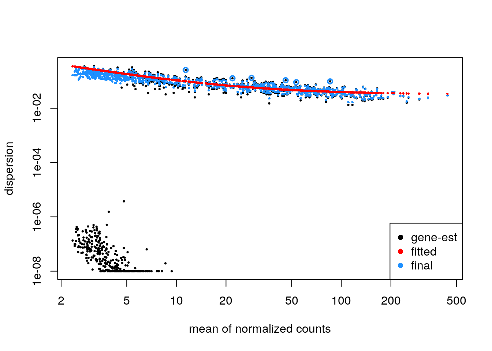
If the parametric trend fails to fit (there would be a warning in this case), one should check the dispersion plot as above. If it looks like the dispersion fit is being thrown off by the low count genes with low dispersion estimates at the bottom of the plot, there is a relatively easy solution: one can filter out more of the low count genes only for the dispersion estimation step, so that the trend still captures the upper portion. This is pretty easy to do in DESeq2, to filter genes solely for the dispersion trend estimation, but to use a larger set for the rest of the analysis. An example of how this can be done:
keepForDispTrend <- rowSums(counts(zdds) >= 10) >= 25
zdds2 <- estimateDispersionsFit(zdds[keepForDispTrend,])
plotDispEsts(zdds2)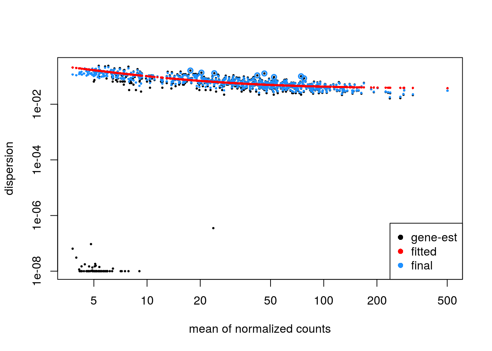
One would then assign the dispersion function to the original dataset, re-estimate final dispersions, check plotDispEsts, and then either re-run the Wald or LRT function:
dispersionFunction(zdds) <- dispersionFunction(zdds2)
zdds <- estimateDispersionsMAP(zdds)
#> found already estimated dispersions, removing these
zdds <- nbinomLRT(zdds, reduced=~1, minmu=1e-6)
#> found results columns, replacing these7.8.6 Evaluation against truth
Compare dispersion on the non-zero-component counts to the true value used for simulation.
with(mcols(zdds), plot(trueDisp, dispMAP, log="xy"))
abline(0,1,col="red")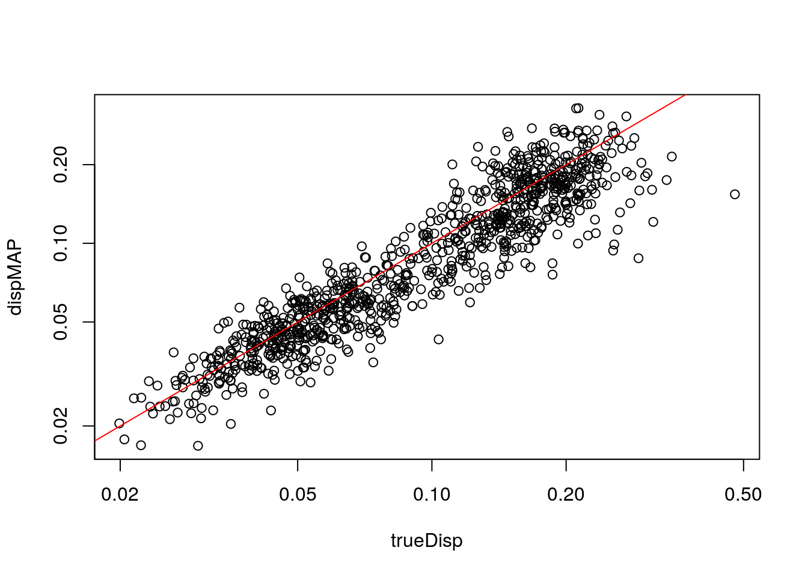
Extract results table:
zres <- results(zdds, independentFiltering=FALSE)
plot(mcols(zdds)$log2FC, zres$log2FoldChange, ylim=c(-4,4)); abline(0,1,col="red")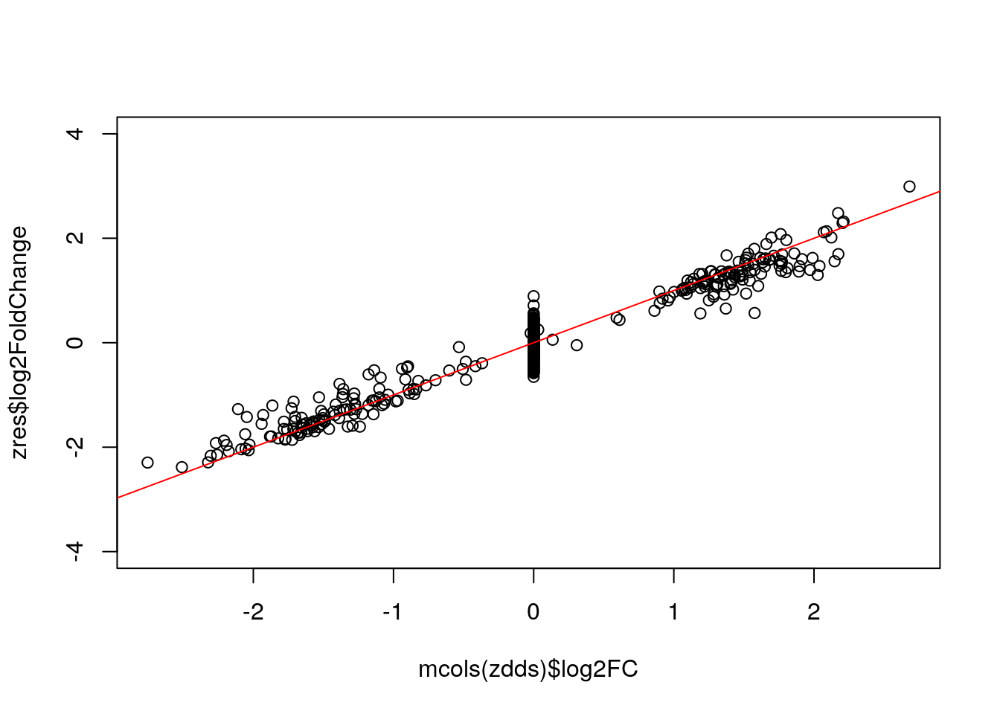
Below we show that the “simple” LFC does not work - it over-estimates the true DE LFC because of the dropout zeros in the group with the smaller mean. It also has a lot of noise for the null genes.
ncts <- counts(zdds, normalized=TRUE)
simple.lfc <- log2(rowMeans(ncts[,zdds$condition == "Group2"])/
rowMeans(ncts[,zdds$condition == "Group1"]))
plot(mcols(zdds)$log2FC, simple.lfc, ylim=c(-4,4)); abline(0,1,col="red")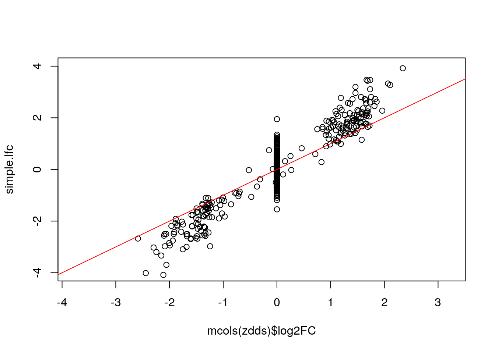
How well do we do in null hypothesis testing:
tab <- table(sig=zres$padj < .05, DE.status=mcols(zdds)$log2FC != 0)
tab
#> DE.status
#> sig FALSE TRUE
#> FALSE 750 15
#> TRUE 11 204
round(prop.table(tab, 1), 3)
#> DE.status
#> sig FALSE TRUE
#> FALSE 0.980 0.020
#> TRUE 0.051 0.949